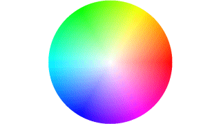

| Copyright | Written by David Himmelstrup |
|---|---|
| License | Unlicense |
| Maintainer | lemmih@gmail.com |
| Stability | experimental |
| Portability | POSIX |
| Safe Haskell | None |
| Language | Haskell2010 |
Reanimate.Builtin.CirclePlot
Description
Convenience module for rendering circle plots.
Synopsis
- circlePlot :: Int -> (Double -> Double -> PixelRGBA8) -> Tree
Documentation
Arguments
| :: Int | Number of diagonal pixels. Only affects quality, not size. |
| -> (Double -> Double -> PixelRGBA8) | Angle and radius in radians and percent respectively. |
| -> Tree |
Circle plots are scaled to screenHeight.
Example:
circlePlot500 $ \ang r ->promotePixel$ toRGB8 $ uncurryRGB sRGB $ hsv (ang/pi*180) r 1
